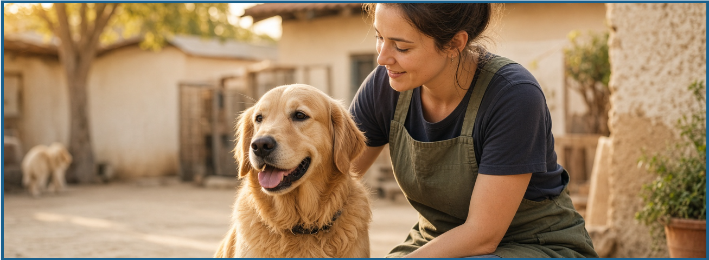

Rescue & Intake
We respond to reports of abandoned, injured or vulnerable animals and bring them to safety.
Our rescue work covers intake, veterinary care, foster support, behavioural rehabilitation and successful adoption matching.

We respond to reports of abandoned, injured or vulnerable animals and bring them to safety.
Each animal receives veterinary attention, treatment and ongoing health monitoring during recovery.
Our foster network offers safe, loving environments where animals can recover and build trust.
We work patiently to help shy or anxious animals regain confidence and adoptable routines.
We focus on long-term placement, matching each pet with a home that supports their needs and personality.
We educate the community on animal welfare and encourage responsible, compassionate pet ownership.